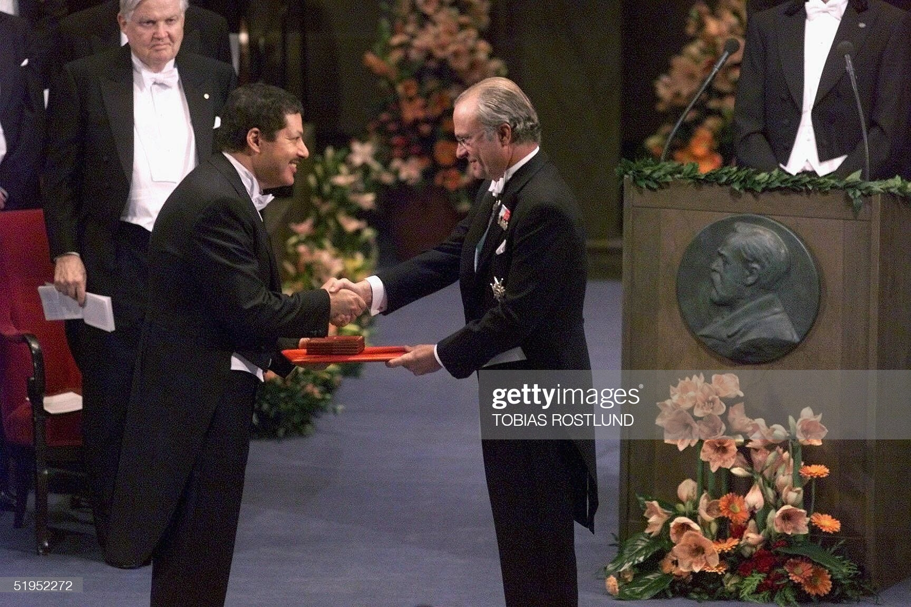

Ahmed Zewail
The World's Fastest Scientist

Ahmed Zewail getting awarded the 1999 Nobel Prize in Chemistry for
his work on femtochemistry.
Timeline of Prof. Zewail's life journey
- 1946
- Born on February 26, 1946 in Damanhūr, Egypt.
- 1963
- Admitted to the Faculty of Sciences, Alexandria University.
- 1967
- Graduated with the degree of Bachelor of Science, with the highest honors – “Distinction with First Class Honor” – with above 90% in all areas of chemistry.
- Appointed to a University position as a demonstrator (“Moeid”), to carry on research toward a Masters and then a Ph.D. degree, and to teach undergraduates at the University of Alexandria.
- 1969
- Aquired his Masters of Science (M.S.) degree from Alexandria University, working mainly on spectral changes of various molecules in different solvents.
- 1974
- Zewail attended the University of Pennsylvania, where he earned a doctorate (Ph.D.)
- Zewail began his postdoctoral work in the College of Chemistry, University of California at Berkeley, in the group of Charles B. Harris. This was a significant turning point in his career, for it was while working with Harris that the importance of the concept of coherence occurred to him.
- He and Harris published several papers on coherence in electronically excited dimers.
- 1976
- Accepting Caltech offer of Assistant Professorship.
- 1989
- Won the King Faisal International Prize from Saudi Arabia.
- In March, he met Dema, his wife. They met in March, got engaged in July and married in September, all of the same year, 1989.
- 1990
- Selected as the school’s first Linus Pauling Professor of Chemical Physics.
- Zewail also served as a visiting professor at a number of institutions, including Texas A&M University, the University of Iowa, and American University at Cairo.
- 1999
- Won the Nobel Prize for Chemistry in 1999 for developing a rapid laser technique that enabled scientists to study the action of atoms during chemical reactions.
- Because chemical reactions last only 10 to 100 femtoseconds (fs)—one femtosecond is 0.000000000000001 second, or 10 -15, this breakthrough created a new field of physical chemistry known as femtochemistry.
- Zewail was the first Egyptian and the first Arab to win a Nobel Prize in a science category.
- Awarded Grand Collar of the Nile, Highest State Honor, conferred by President Mubarak.
- 2011
- He founded Zewail City of Science and Technology, a premier institute of technology in Cairo.
- 2016
- Died on 2 August 2016, Pasadena, CA, USA.
Curiosity – the rover and the concept – is what science is all about: the quest to reveal the unknown. — Ahmed Zewail